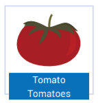
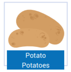
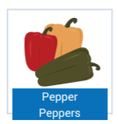
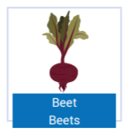
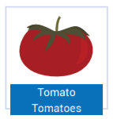
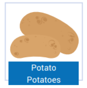
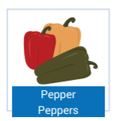
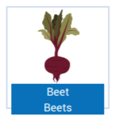

Tópico 3: Rotina e Hábitos; Alimentação e Lista de Supermercado; Vestuário
2.1 What’s in the fridge
Carly está conferindo o que tem nas shelves da fridge e nos cupboards. Ela parece estar starving (faminta). Enquanto isso, Rosa a observa com estranhamento. Acompanhe a conversa das garotas e perceba como seus hábitos alimentares são diferentes.
Carly: We have to go shopping for food today!
Rosa: Hmm… really? Is it necessary? Today is only Wednesday and we usually go shopping for food on Saturdays.
Carly: Yeah! I know, but there isn’t much food. The shelves are empty!
Rosa: No, they aren’t! Look, there are some potatoes and a few eggs. There is an orange cake. Also, there are some oranges and lots of strawberries. In my opinion we…
Carly: Yuk! I don’t like fruit... we need real food!! Let’s make a list. Write it down Rosa. Cereal and some milk. Also, I want some snacks, crackers and cookies. And there aren’t any chocolate bars! This is terrible! Let’s buy some candies and chewing gum. Besides that we need mayo, mustard, ketchup, peanut butter, syrup, a six-pack of soda, bacon, popcorn…
Rosa: Hey, slow down.
Carly: A jar of jam, sausages, pudding… let me see…
Rosa: Wow! That’s a lot of food.
Carly: And ice cream! We need vanilla ice cream and another orange cake. And pizza, of course. Peperoni pizza! Yummy..
No diálogo que você acaba de ler, Rosa e Carly falam sobre o que precisam comprar no supermercado. No conteúdo a seguir você verá quais desses itens são contáveis e quais são incontáveis.
2.2 Countable and uncountable nouns
Em língua inglesa, os substantivos são classificados como countable (contáveis) ou uncountable (incontáveis), que se refere à possibilidade - ou não - de certas substâncias e objetos serem contados. Nessa aula você verá os substantivos relacionados à alimentação.
O que chamamos de uncountable nouns (substantivos incontáveis) refere-se a substantivos que não podemos separar em unidades isoladas, portanto, não podemos quantificá-los.
Este é o caso de coisas no estado liquid (líquido), paste (pasta), powder (pó) e grain (grão).
Por exemplo, não é possível dizer two milks (dois leites), pois se trata de um liquid. Da mesma forma, não é possível dizer one peanut butter (uma manteiga de amendoim), one sugar (um açúcar) ou three cereals (três cereais), por se tratarem de paste, powder e grain, respectivamente.
Para especificar a quantidade destes produtos, basta que façamos referência às embalagens/recipientes que os comportam. Não dizemos two milks, mas é possível dizer two glasses of milk (dois copos de leite).
Da mesma forma, não podemos dizer one peanut butter, e sim one jar of peanut butter (um pote de manteiga de amendoim). Seguindo o mesmo raciocínio, na língua inglesa não dizemos one cereal, mas sim three bowls of cereal (três tigelas de cereais), por exemplo. Veja no tópico Packages and Containers vários exemplos de como quantificar alguns substantivos.
2.3 Packages and containers
Como você deve ter percebido nos exemplos anteriores, quando se trata de substantivos incontáveis não pluralizamos o substantivo em si (milk, peanut butter, cereal), mas a medida ou embalagem em que ele se encontra. Existem diversas formas de se determinar as quantidades dos substantivos incontáveis. Acompanhe a seguir algumas delas.
| Uncountable noun | Countable noun | Português |
|---|---|---|
| Soda | A can of soda | Uma lata de refrigerante |
| Jam | A jar of peach jam | Uma jarra de geleia de pêssego |
| Chips | A bag of chips | Um pacote de salgadinhos |
| Tea | A cup of tea | Uma xícara de chá |
| Coffee | A cup of coffee | Uma xícara de café |
| Bread | A slice of bread A loaf of bread |
Uma fatia de pão Um pão de forma |
| Sugar | A spoonful of sugar | Uma colherada de açúcar |
| Beans | A kilo of beans | Um quilo de feijão |
| Rice | A bowl of rice | Uma tigela de arroz |
| Water | A bottle of water A liter of water Half a liter of water A gallon of water |
Uma garrafa d´água Um litro d´água Meio litro de água Um galão de água |
| Milk | A glass of milk A carton of milk |
Um copo de leite Uma caixa de leite |
| Beer | A pint of beer | Meio litro de cerveja |
| Lettuce | A head of lettuce | Uma cabeça de alface |
| Garlic | A clove of garlic | Um dente de alho |
| Toilet paper | A roll of toilet paper | Um rolo de papel higiênico |
| Plastic wrap | A roll of plastic wrap | Um rolo de filme plástico |
| Toothpaste | A tube of toothpaste | Um tubo de pasta dental |
| Pizza | A piece of pizza | Um pedaço de pizza |
| Cheese | A slice of cheese | Uma fatia de queijo |
| Juice | A jug of juice | Uma jarra de suco |
| Salt | A pinch of salt | Uma pitada de sal |
| Soup | A bowl of soup | Uma tigela de sopa |
| Ice cream | Two scoops of ice cream | Duas bolas de sorvete |
Mind the gap: Gallon - galão; equivale a 4.546 litros no Reino Unido e 3.785 litros nos Estados Unidos.
Além dos substantivos relacionados à alimentação, outros itens também são considerados uncountables . Acompanhe:
| English | Português |
|---|---|
| Money | dinheiro |
| Music | música |
| Luggage | bagagem |
| Furniture | mobília |
| Electricity | eletricidade |
| Information | informação |
| Advice | conselho |
| Travel | viagem |
| Work | trabalho |
| Trip | excursão |
| Scenery | cenário |
| Homework | lição de casa/tema |
| Hair | cabelo |
| Paper | papel |
Com este conteúdo é possível que você consiga mencionar alguns uncountable nouns. A seguir, conheça alguns countable nouns.
2.4 Countable nouns
Todos os substantivos considerados countable seguem as regras de formação do plural que você conheceu na lição anterior. Veja alguns exemplos:
 







Alguns substantivos uncountable podem se apresentar na forma de plural tornando-se, assim, countable. Isso acontece quando estes substantivos adquirem um novo significado. Observe a tabela a seguir:
| Uncountable Use | Countable Use |
|---|---|
| Chicken is delicious. (Carne de frango é uma delícia.) | I need two chickens, please. (Eu preciso de duas galinhas, por favor.) |
| Let’s have some coffee? (Vamos tomar café?) | Carlton drinks two coffees during his shift at the pub. (two cups of coffee) (Carlton bebe dois cafés durante seu turno no pub. - duas xícaras de café) |
| Carly doesn’t like fruit. (Carly não gosta de fruta.) | Rosa wants to buy some fruit at the supermarket. (different kinds of fruit) (Rosa quer comprar algumas frutas no supermercado. - diferentes tipos de fruta) |
| I need more cheese on this pizza. (Eu preciso de mais queijo nessa pizza.) | There are many cheeses at Joe´s Grocery. (different kinds of cheese) (Há muitos queijos na mercearia do Joe. - diferentes tipos de queijo) |
Você deve ter percebido que, baseado no diálogo inicial da aula, Carly loves junk food. Possivelmente você já ouviu essa expressão. Junk food refere-se a comidas não muito nutritivas. Diferente de sua roommate, Rosa parece ser um pouco mais preocupada em manter uma alimentação saudável.
Outra coisa que você poderá ter percebido ao longo da conversa entre as personagens, foi que quando Carly e Rosa queriam dizer o que tinha, ou o que não tinha (no sentido de haver) nas suas fridge shelves e cupboards shelves elas usaram o verbo There to be. O tópico a seguir aborda esse conteúdo.
2.5 Verb There to be
Quando queremos dizer que há/existe (ou não) alguma coisa, utilizamos o verbo There to be. Veja a fala de Rosa ao tentar convencer Carly de que há comida suficiente em casa:
There are some potatoes and a few eggs. There is an orange cake. Also, there are some oranges and lots of strawberries.
Quando estamos nos referindo a countable nouns no singular usamos there is . Se o substantivo estiver no plural, usamos there are. Se o substantivo for uncountable também usamos there is. Acompanhe os exemplos a seguir:
| Singular | Plural |
|---|---|
| There is an orange cake. | There are lots of strawberries. |
| Tem/Há um bolo de laranja. | Tem/Há muitos morangos. |
Quando o substantivo está no singular (orange cake), usa-se o artigo a ou an , ou ainda o numeral one. Caso o substantivo esteja no plural (strawberries), você pode utilizar os numerais ou algum quantifier como lots of, por exemplo. Os quantifiers serão estudados no decorrer desta aula.
Caso você queira dizer que não há alguma coisa, você precisará de uma frase negativa. Para isso, você só precisa colocar a partícula not junto ao verbo.
| Singular | Plural |
|---|---|
| There isn’t a carton of juice. | There aren’t two cartons of juice. |
| There isn’t a box of pizza. | There aren’t eight boxes of pizza. |
Como você talvez já tenha se acostumado através da experiência com os outros tempos verbais, nas frases interrogativas sempre há uma mudança na ordem dos elementos da frase: no verbo There to be, a flexão correspondente ao To be, ou seja, is/are precede o there. Short answers podem ser utilizadas para uma resposta curta de sim ou não.
| Question | Affirmative form | Negative form |
|---|---|---|
| Is there a chocolate bar for Carly? | Yes, there is. | No, there isn’t. |
| Are there boxes of pepperoni pizza? | Yes, there are. | No, there aren’t. |
Analisando as frases, pode-se concluir que se um determinado substantivo pode estar tanto no singular quanto no plural significa que ele é countable. Isto acontece porque os uncountable não assumem uma versão pluralizada.
Outras formas de se determinar as quantidades de substantivos serão apresentadas no tópico a seguir.
2.6 Asking for quantities
Para perguntar sobre quantidades, podemos utilizar duas perguntas: How much...? (Quanto/a...?) e How many...? (Quantos/as...?) acrescidas de um uncountable ou countable + there to be.
How much é utilizado com uncountable nouns e por isso usamos is. How many é usado com countable nouns e neste caso deverá ser usado are.
How much milk is there?
(How much = quantifier; milk = uncountable nouns; is there = there to be)
How many cartons of milk are there?
(How many = quantifier; cartons of milk = countable nouns; are there = there to be)
Conforme já foi visto, quando nos referimos a um uncountable noun em uma medida ou embalagem, ele se torna countable. Nesse caso também podemos utilizar how many. Leia os exemplos e repita-os.
| English | Português |
|---|---|
| How much pizza is there? | Quanta pizza há/existe? |
| How many pieces of pizza are there? | Quantos pedaços de pizza há/existem? |
Ao perguntar sobre a quantidade de alguns alimentos, podemos responder utilizando alguns quantifiers. Acompanha o conteúdo a seguir para que você possa empregá-los adequadamente.
2.7 Telling about quantities
Você já estudou algumas formas mais específicas de determinar as quantidades dos substantivos. Agora você verá outras maneiras para responder e falar sobre as quantidades. Elas são um pouco menos precisas ao informar o número exato de alguma coisa, mas são muito usadas no dia a dia.
É necessário estar atento à maneira como respondemos, pois é preciso considerar se estamos lidando com countable ou uncountable nouns.
Para responder dizendo que há muito de alguma coisa, utilizamos a lot of ou, se preferir mais informal, lots of. Ambas são utilizadas com countable e uncountable nouns. Quem determina o singular ou plural é o substantivo, não o quantificador a lot of. Veja a seguir alguns exemplos de perguntas e respostas:
| Question | Answer |
|---|---|
| How much food is there in the fridge? | There is a lot of food! |
| How much salt is there? | There is lots of salt. |
| How many eggs are there? | A lot of! |
| How many strawberries are there? | Lots of them! |
Ao contrário de a lot of, a expressão a bit of pode ser usada apenas com uncountable nouns e expressa a ideia de que há pouco. Acompanhe os exemplos e repita-os em voz alta.
| Question | Answer |
|---|---|
| How much ice cream is there? | There is a bit of ice cream. |
| How much syrup is there? | There is a bit of syrup. |
Outra forma de dizer que há pouco de alguma coisa é usar a little e a few. É possível compreender o significado de cada um desses determiners (determinantes) ao perceber-se a diferença que existe entre eles.
A few significa alguns/algumas com sentido de poucos/poucas, numa quantidade suficiente. Few também significa poucos/poucas, mas querendo dizer que a quantidade não é suficiente. Ambos são utilizados com countable nouns, e nesse caso os substantivos devem estar na forma plural. Observe os exemplos:
There are a few eggs in the fridge. - expressa a ideia de que há o suficiente para as garotas prepararem um bolo.
There are few eggs. - expressa a ideia de que não há o suficiente para uma omelete que sirva todas as garotas.
A little quer dizer um pouco/um pouquinho de alguma coisa e, assim como a few, também significa uma quantidade razoável. Little significa pouco/ pouca, em quantidade que não é suficiente. Ambos são utilizados com uncountable nouns e, consequentemente, os substantivos só podem estar na forma singular.
Quando Rosa está tomando nota de tudo que Carly quer do supermercado, ela diz:
I don’t have money for all that junk food.
Se observarmos a frase com cuidado, Rosa está querendo dizer:
I have little money.
Ou seja, o montante de dinheiro não é suficiente para comprar junk food. Veja outros exemplos a seguir. Repita-os em voz alta para exercitar sua pronúncia.
There is a little cake.
There is a little wine.
Outra forma de se dizer que tem pouco de alguma coisa, é dizer que não tem muito. Ou seja, cria-se uma frase negativa. Podemos fazer isso usando much e many. Como você já viu anteriormente, usamos much com substantivos incontáveis e many com substantivos contáveis. Atente para os exemplos e repita-os em voz alta.
There isn’t much water
There isn’t much soup.
There aren’t many hot dogs.
There aren’t many cookies.
Any é usado em frases negativas e interrogativas, mas com uma diferença fundamental entre ambas. Nas frases interrogativas, any expressa a ideia de algum/alguma e nas frases negativas tem o sentido de nenhum/nenhuma. Para dizer que não tem absolutamente nada de alguma coisa usamos any, tanto com countable quanto uncountable nouns. Observe na tabela as negatives sentences:
| English | Português |
|---|---|
| There isn’t any chocolate pie. | Não há nenhuma torta de chocolate. Não há torta de chocolate. |
| There isn’t any mayo. | Não há nenhuma maionese. Não há maionese. |
| There aren’t any sausages. | Não há nenhuma salsicha. |
Veja na tabela a seguir alguns exemplos de frases interrogativas:
| English | Português |
|---|---|
| Is there any tomato soup? | Há alguma sopa de tomate? |
| Are there any pineapples? | Há algum abacaxi? |
Também utilizamos some em frases afirmativas para expressar quantidade, tanto com substantivos contáveis quanto incontáveis. Assim como any, some significa algum(ns)/alguma(s). Acompanhe os exemplos:
There is some butter.
There is some sugar.
There are some potatoes.
There are some oranges.
2.8 Resumo e glossário
Glossary
To eat: comer
Shelves: prateleiras
Fridge: geladeira
Cupboard: armário
Hungry: com fome
Sausage: linguiça
Steak: bife
Cookie: biscoito
Egg: ovo
Candy: doce
Bonbon: bombom
Sandwich: sanduíche
Burger: hambúrguer
Pancake: panqueca
Hot dog: cachorro-quente
Meatball: almôndega
Fruit: fruta
Banana: banana
Orange: laranja
Strawberry: morango
Apple: maçã
Pineapple: abacaxi
Grape: uva
Watermelon: melancia
Pear: pera
Passion fruit: maracujá
Lemon: limão
Melon: melão
Coconut: coco
Papaya: mamão
Kiwifruit: kiwi
Tangerine: tangerina
Peach: pêssego
Onion: cebola
Carrot: cenoura
Cabbage: repolho
Chili: pimenta
Cauliflower: couve-flor
Pea: ervilha
Mushroom: cogumelo
Corncob: milho verde
Cucumber: pepino
Pickle: picles
Pumpkin: abóbora
Tomato: tomate
Potato: batata
Pepper: pimentão
Beet: beterraba
Supermarket list: lista de supermercado
Chocolate bar: barra de chocolate
Yummy meal: refeição saborosa
Legumes and vegetables: legumes e vegetais
A very tasty food: uma comida muito saborosa
Eggplant (AmE)/Aubergine (BrE): beringela